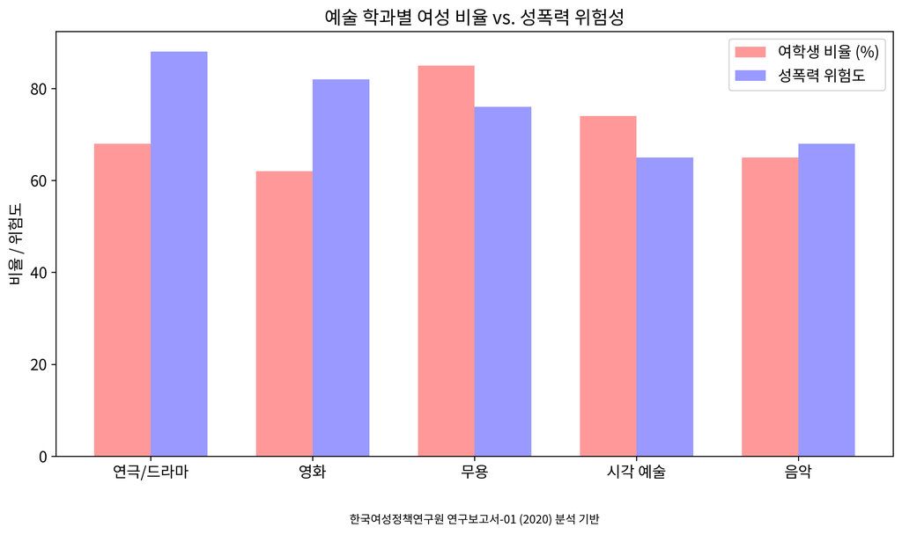

Gender Watchdog는 동국대학교를 비롯한 한국 대학의 성폭력 문제, 제도적 은폐, 그리고 공공자금 오용을 문서화하는 프로젝트입니다. 성인지 감수성을 제고하고 캠퍼스 내 성폭력 생존자를 지원합니다.

예술계열 여학생이 경험하는 성폭력 비율 (한국여성정책연구원)
대학 내 성폭력 가해자 중 교수가 차지하는 비율
동국대학교 영화 프로그램의 성폭력 위험 점수
동국대학교는 한국여성정책연구원에서 성폭력 위험 점수가 가장 높은(81/100) 영화 프로그램을 운영하고 있습니다. 디지털 영상 및 콘텐츠 대학원은 전원 남성 교수진으로 구성되어 있습니다.
동국대학교는 2018년 한국 미투 운동이 최고조에 달했을 때 여학생회를 해체했습니다. 이는 학내 성폭력 피해자들의 목소리를 약화시키는 조치였습니다.
2016년 사례에서 동국대학교는 검찰로부터 성폭력 사건에 대해 통보받은 후 6개월 동안 아무런 조치를 취하지 않았습니다. 이는 심각한 제도적 실패를 보여주는 사례입니다.
동국대학교는 실제로 존재하지 않는 381개의 국제 대학 파트너십을 주장했습니다. 이는 정부 지원금을 받기 위한 목적으로 이루어진 것으로 추정됩니다.
동국대학교가 제공하는 성인지 감수성 테스트는 성폭력에 관한 유해한 신화를 영속화하고 있습니다. 우리는 증거 기반의 정확한 성폭력 예방 및 생존자 지원 교육을 제공합니다.
주의: 동국대학교의 "성인지 감수성"이라는 오해의 소지가 있는 용어는 한국여성정책연구원(KWDI)이 2020년 보고서에서 명확하게 성폭력으로 정의한 문제를 약화시킵니다.
이러한 문항은 피해자에게 책임을 전가하는 잘못된 관점을 강화합니다.
침묵은 동의가 아닙니다. 이는 분명한 동의의 중요성을 무시합니다.
이는 '아니오'가 '예'를 의미한다는 위험한 오해를 퍼뜨립니다.
"젠더와치독은 End Rape On Campus (@EndRapeOnCampus)로부터 동국대학교의 성폭력 은폐 문제를 공개하는 데 지원을 받게 되어 영광입니다. EROC가 우리의 노력을 확대하고, 연대를 제공하며, 옹호 활동에 조언해 주신 것에 감사드립니다."